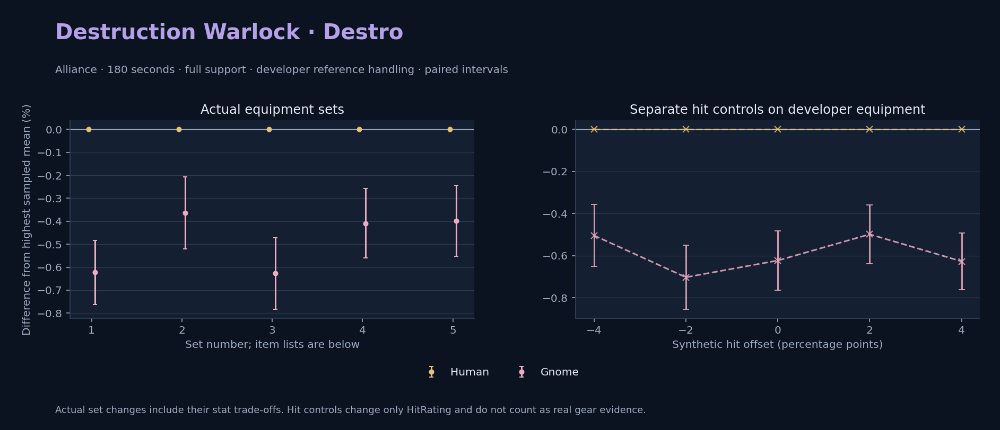

Alliance · Human / Gnome

Pets / guardians: Imp, Voidwalker, Succubus, Felhunter · 55.8 DPS (8.3% of total). Reference: Human, developer equipment, 180 seconds and full support. Pet choices remain those of the developer build.
WoWSims developer · Pre-raid (baseline fallback)
Unimplemented item effects: [{"id": 14153, "name": "Robe of the Void", "effects": ["Heal your pet for 600."]}]
Unimplemented enchant or active set effects: [{"id": 183, "pieces": 4, "effects": ["When struck in combat has a 2% chance of causing the attacker to flee in terror for 2s. Can only occur once every 60 sec."]}]
180 seconds, full support and original developer references. Hit below is generic sheet melee / spell hit; school and talent bonuses can be attached directly to spells.
| Race | DPS | Gap and interval | Generic hit | Replay |
|---|---|---|---|---|
| Human | 667.70 | +0.000% ± 0.000 | 7.0% / 7.0% | Native input · Website JSON |
| Gnome | 663.54 | -0.623% ± 0.140 | 7.0% / 7.0% | Native input · Website JSON |
| Slot | Item | ID | Enchant |
|---|---|---|---|
| Head | Dreadmist Mask | 16698 | |
| Neck | Beads of Ogre Mojo | 22149 | |
| Shoulder | Dreadmist Mantle | 16701 | |
| Back | Arcanoweave Cloak | 272411 | |
| Chest | Robe of the Void | 14153 | |
| Wrist | Dreadmist Bracers | 16703 | |
| Hands | Dreadmist Wraps | 16705 | |
| Waist | Dreadmist Belt | 16702 | |
| Legs | Dreadmist Leggings | 16699 | |
| Feet | Dreadmist Sandals | 16704 | |
| Ring 1 | Jereman's Bauble | 275738 | |
| Ring 2 | Advisor's Ring | 19518 | |
| Trinket 1 | Weakness Analyzer | 272438 | |
| Trinket 2 | Jewel of the Guard Captain | 270225 | |
| Main hand | Clever Expeditionary's Spellblade | 271928 | |
| Off hand | Truesilver Conduit | 249455 | |
| Ranged / relic | Lunar Wand | 15283 |
Published ranked alternatives · Published pre-raid
Recorded source replacements: [{"slot": "chest", "from": 17775, "to": 1716, "publishedAlternativeRank": 1, "publishedEpDelta": -1.1, "reason": "First published alternative compatible with the current WoWSims database, class, faction and occupied slots."}, {"slot": "feet", "from": 11822, "to": 275606, "publishedAlternativeRank": 1, "publishedEpDelta": -0.9, "reason": "First published alternative compatible with the current WoWSims database, class, faction and occupied slots."}]
180 seconds, full support and original developer references. Hit below is generic sheet melee / spell hit; school and talent bonuses can be attached directly to spells.
| Race | DPS | Gap and interval | Generic hit | Replay |
|---|---|---|---|---|
| Human | 759.69 | +0.000% ± 0.000 | 8.0% / 8.0% | Native input · Website JSON |
| Gnome | 756.93 | -0.364% ± 0.156 | 8.0% / 8.0% | Native input · Website JSON |
| Slot | Item | ID | Enchant |
|---|---|---|---|
| Head | Dreadmist Mask | 16698 | Arcanum of Focus |
| Neck | Archlight Talisman | 15856 | Enchant Necklace - Spell Power |
| Shoulder | Mantle of the Timbermaw | 19050 | |
| Back | Arcanoweave Cloak | 272411 | |
| Chest | Robe of the Magi | 1716 | Mystic Rugged Armor Kit |
| Wrist | Dreadmist Bracers | 16703 | Enchant Bracer - Greater Spellpower |
| Hands | Gloves of Spell Mastery | 14146 | Enchant Gloves - Minor Haste |
| Waist | Belt of the Archmage | 18405 | |
| Legs | Dreadmist Leggings | 16699 | Arcanum of Focus |
| Feet | Venomspew Footpads | 275606 | Mystic Rugged Armor Kit |
| Ring 1 | Blessed Band of Light | 272407 | |
| Ring 2 | Maiden's Circle | 13001 | |
| Trinket 1 | Weakness Analyzer | 272438 | |
| Trinket 2 | Uther's Strength | 11302 | |
| Main hand | Sageblade | 22383 | |
| Off hand | Spirit of Aquementas | 11904 | Enchant Off-Hand - Superior Intellect |
| Ranged / relic | Greater Eternal Wand | 249237 |
Published one-slot hit alternative · Published pre-raid
One source-listed alternative; at least 80% of the source slot score retained. Reported hit selects the contrast; only native stats determine simulation outcomes. This is an experimental combination, not an endorsed best set.
Recorded source replacements: [{"slot": "chest", "from": 17775, "to": 1716, "publishedAlternativeRank": 1, "publishedEpDelta": -1.1, "reason": "First published alternative compatible with the current WoWSims database, class, faction and occupied slots."}, {"slot": "feet", "from": 11822, "to": 275606, "publishedAlternativeRank": 1, "publishedEpDelta": -0.9, "reason": "First published alternative compatible with the current WoWSims database, class, faction and occupied slots."}]
180 seconds, full support and original developer references. Hit below is generic sheet melee / spell hit; school and talent bonuses can be attached directly to spells.
| Race | DPS | Gap and interval | Generic hit | Replay |
|---|---|---|---|---|
| Human | 756.98 | +0.000% ± 0.000 | 9.0% / 9.0% | Native input · Website JSON |
| Gnome | 752.24 | -0.627% ± 0.156 | 9.0% / 9.0% | Native input · Website JSON |
| Slot | Item | ID | Enchant |
|---|---|---|---|
| Head | Dreadmist Mask | 16698 | Arcanum of Focus |
| Neck | Archlight Talisman | 15856 | Enchant Necklace - Spell Power |
| Shoulder | Mantle of the Timbermaw | 19050 | |
| Back | Arcanoweave Cloak | 272411 | |
| Chest | Robe of the Magi | 1716 | Mystic Rugged Armor Kit |
| Wrist | Dreadmist Bracers | 16703 | Enchant Bracer - Greater Spellpower |
| Hands | Gloves of Spell Mastery | 14146 | Enchant Gloves - Minor Haste |
| Waist | Belt of the Archmage | 18405 | |
| Legs | Dreadmist Leggings | 16699 | Arcanum of Focus |
| Feet | Venomspew Footpads | 275606 | Mystic Rugged Armor Kit |
| Ring 1 | Blessed Band of Light | 272407 | |
| Ring 2 | Channeler's Ring | 272406 | |
| Trinket 1 | Weakness Analyzer | 272438 | |
| Trinket 2 | Uther's Strength | 11302 | |
| Main hand | Sageblade | 22383 | |
| Off hand | Spirit of Aquementas | 11904 | Enchant Off-Hand - Superior Intellect |
| Ranged / relic | Greater Eternal Wand | 249237 |
Published ranked alternatives · Published pre-raid
Recorded source replacements: [{"slot": "shoulder", "from": 227808, "to": 19050, "publishedAlternativeRank": 1, "publishedEpDelta": -10.7, "reason": "First published alternative compatible with the current WoWSims database, class, faction and occupied slots."}, {"slot": "waist", "from": 228190, "to": 18405, "publishedAlternativeRank": 1, "publishedEpDelta": -9.6, "reason": "First published alternative compatible with the current WoWSims database, class, faction and occupied slots."}, {"slot": "feet", "from": 11822, "to": 275606, "publishedAlternativeRank": 1, "publishedEpDelta": -0.9, "reason": "First published alternative compatible with the current WoWSims database, class, faction and occupied slots."}]
Unimplemented item effects: [{"id": 14153, "name": "Robe of the Void", "effects": ["Heal your pet for 600."]}]
180 seconds, full support and original developer references. Hit below is generic sheet melee / spell hit; school and talent bonuses can be attached directly to spells.
| Race | DPS | Gap and interval | Generic hit | Replay |
|---|---|---|---|---|
| Human | 780.68 | +0.000% ± 0.000 | 8.9% / 8.9% | Native input · Website JSON |
| Gnome | 777.49 | -0.409% ± 0.151 | 8.9% / 8.9% | Native input · Website JSON |
| Slot | Item | ID | Enchant |
|---|---|---|---|
| Head | Dreamweave Circlet | 10041 | Arcanum of Focus |
| Neck | Archlight Talisman | 15856 | Enchant Necklace - Spell Power |
| Shoulder | Mantle of the Timbermaw | 19050 | |
| Back | Arcanoweave Cloak | 272411 | |
| Chest | Robe of the Void | 14153 | Mystic Rugged Armor Kit |
| Wrist | Runecloth Cuffs | 254123 | Enchant Bracer - Greater Spellpower |
| Hands | Gloves of Spell Mastery | 14146 | Enchant Gloves - Minor Haste |
| Waist | Belt of the Archmage | 18405 | |
| Legs | Ghostweave Pants | 14144 | Arcanum of Focus |
| Feet | Venomspew Footpads | 275606 | Mystic Rugged Armor Kit |
| Ring 1 | Blessed Band of Light | 272407 | |
| Ring 2 | Maiden's Circle | 13001 | |
| Trinket 1 | Weakness Analyzer | 272438 | |
| Trinket 2 | Frozen Heart of the Mountain | 249469 | |
| Main hand | Sageblade | 22383 | |
| Off hand | Spirit of Aquementas | 11904 | Enchant Off-Hand - Superior Intellect |
| Ranged / relic | Brilliant Wand | 249385 |
Published one-slot hit alternative · Published pre-raid
One source-listed alternative; at least 80% of the source slot score retained. Reported hit selects the contrast; only native stats determine simulation outcomes. This is an experimental combination, not an endorsed best set.
Recorded source replacements: [{"slot": "shoulder", "from": 227808, "to": 19050, "publishedAlternativeRank": 1, "publishedEpDelta": -10.7, "reason": "First published alternative compatible with the current WoWSims database, class, faction and occupied slots."}, {"slot": "waist", "from": 228190, "to": 18405, "publishedAlternativeRank": 1, "publishedEpDelta": -9.6, "reason": "First published alternative compatible with the current WoWSims database, class, faction and occupied slots."}, {"slot": "feet", "from": 11822, "to": 275606, "publishedAlternativeRank": 1, "publishedEpDelta": -0.9, "reason": "First published alternative compatible with the current WoWSims database, class, faction and occupied slots."}]
Unimplemented item effects: [{"id": 14153, "name": "Robe of the Void", "effects": ["Heal your pet for 600."]}]
180 seconds, full support and original developer references. Hit below is generic sheet melee / spell hit; school and talent bonuses can be attached directly to spells.
| Race | DPS | Gap and interval | Generic hit | Replay |
|---|---|---|---|---|
| Human | 777.64 | +0.000% ± 0.000 | 9.9% / 9.9% | Native input · Website JSON |
| Gnome | 774.54 | -0.398% ± 0.154 | 9.9% / 9.9% | Native input · Website JSON |
| Slot | Item | ID | Enchant |
|---|---|---|---|
| Head | Dreamweave Circlet | 10041 | Arcanum of Focus |
| Neck | Archlight Talisman | 15856 | Enchant Necklace - Spell Power |
| Shoulder | Mantle of the Timbermaw | 19050 | |
| Back | Arcanoweave Cloak | 272411 | |
| Chest | Robe of the Void | 14153 | Mystic Rugged Armor Kit |
| Wrist | Runecloth Cuffs | 254123 | Enchant Bracer - Greater Spellpower |
| Hands | Gloves of Spell Mastery | 14146 | Enchant Gloves - Minor Haste |
| Waist | Belt of the Archmage | 18405 | |
| Legs | Ghostweave Pants | 14144 | Arcanum of Focus |
| Feet | Venomspew Footpads | 275606 | Mystic Rugged Armor Kit |
| Ring 1 | Blessed Band of Light | 272407 | |
| Ring 2 | Channeler's Ring | 272406 | |
| Trinket 1 | Weakness Analyzer | 272438 | |
| Trinket 2 | Frozen Heart of the Mountain | 249469 | |
| Main hand | Sageblade | 22383 | |
| Off hand | Spirit of Aquementas | 11904 | Enchant Off-Hand - Superior Intellect |
| Ranged / relic | Brilliant Wand | 249385 |
The same declared pool is available to every race. Each race keeps its best validation-sample set with its screening-selected racial policy. Separate samples confirm that choice, with fresh precision samples near the practical-loss boundary. Gaps use the highest sampled mean under that same duration, support and reference treatment as their reference. A zero reference gap does not certify a race; the main matrix also allows uncertainty in the leader.
| Pool | Seconds | Support | References | Race | DPS | Gap and interval | Racial policies / mana | Selected set | Generic hit: melee / spell | Replay |
|---|---|---|---|---|---|---|---|---|---|---|
| published-pre-raid | 60 | full | developer | Human | 821.97 | +0.000% ± 0.00020,000 iterations | developer / developer / developerMana waits 0.1s | published-warlock-destruction-alliance-09a63b5f33cd78e2 | 8.9% / 8.9% | Input · Result · Stats |
| published-pre-raid | 60 | full | developer | Gnome | 820.05 | -0.233% ± 0.01820,000 iterations | developer / developer / developerMana waits 0.0s | published-warlock-destruction-alliance-09a63b5f33cd78e2 | 8.9% / 8.9% | Input · Result · Stats |
| published-pre-raid | 60 | full | explicit | Human | 821.97 | +0.000% ± 0.00020,000 iterations | developer / developer / developerMana waits 0.1s | published-warlock-destruction-alliance-09a63b5f33cd78e2 | 8.9% / 8.9% | Input · Result · Stats |
| published-pre-raid | 60 | full | explicit | Gnome | 820.05 | -0.233% ± 0.01820,000 iterations | developer / developer / developerMana waits 0.0s | published-warlock-destruction-alliance-09a63b5f33cd78e2 | 8.9% / 8.9% | Input · Result · Stats |
| published-pre-raid | 60 | self | developer | Gnome | 737.03 | +0.000% ± 0.0005,000 iterations | developer / developer / developerMana waits 1.8s | published-warlock-destruction-alliance-09a63b5f33cd78e2 | 8.9% / 8.9% | Input · Result · Stats |
| published-pre-raid | 60 | self | developer | Human | 730.59 | -0.873% ± 0.0815,000 iterations | developer / developer / developerMana waits 2.3s | published-warlock-destruction-alliance-09a63b5f33cd78e2 | 8.9% / 8.9% | Input · Result · Stats |
| published-pre-raid | 60 | self | explicit | Gnome | 737.03 | +0.000% ± 0.0005,000 iterations | developer / developer / developerMana waits 1.8s | published-warlock-destruction-alliance-09a63b5f33cd78e2 | 8.9% / 8.9% | Input · Result · Stats |
| published-pre-raid | 60 | self | explicit | Human | 730.59 | -0.873% ± 0.0815,000 iterations | developer / developer / developerMana waits 2.3s | published-warlock-destruction-alliance-09a63b5f33cd78e2 | 8.9% / 8.9% | Input · Result · Stats |
| published-pre-raid | 180 | full | developer | Human | 779.51 | +0.000% ± 0.0005,000 iterations | developer / developer / developerMana waits 2.4s | published-warlock-destruction-alliance-09a63b5f33cd78e2 | 8.9% / 8.9% | Input · Result · Stats · Website JSON |
| published-pre-raid | 180 | full | developer | Gnome | 775.64 | -0.497% ± 0.0715,000 iterations | developer / developer / developerMana waits 2.4s | published-warlock-destruction-alliance-09a63b5f33cd78e2 | 8.9% / 8.9% | Input · Result · Stats · Website JSON |
| published-pre-raid | 180 | full | explicit | Human | 779.51 | +0.000% ± 0.0005,000 iterations | developer / developer / developerMana waits 2.4s | published-warlock-destruction-alliance-09a63b5f33cd78e2 | 8.9% / 8.9% | Input · Result · Stats |
| published-pre-raid | 180 | full | explicit | Gnome | 775.64 | -0.497% ± 0.0715,000 iterations | developer / developer / developerMana waits 2.4s | published-warlock-destruction-alliance-09a63b5f33cd78e2 | 8.9% / 8.9% | Input · Result · Stats |
| published-pre-raid | 180 | self | developer | Human | 697.19 | +0.000% ± 0.0005,000 iterations | developer / developer / developerMana waits 4.5s | published-warlock-destruction-alliance-09a63b5f33cd78e2 | 8.9% / 8.9% | Input · Result · Stats |
| published-pre-raid | 180 | self | developer | Gnome | 693.07 | -0.591% ± 0.0695,000 iterations | developer / developer / developerMana waits 4.3s | published-warlock-destruction-alliance-09a63b5f33cd78e2 | 8.9% / 8.9% | Input · Result · Stats |
| published-pre-raid | 180 | self | explicit | Human | 697.19 | +0.000% ± 0.0005,000 iterations | developer / developer / developerMana waits 4.5s | published-warlock-destruction-alliance-09a63b5f33cd78e2 | 8.9% / 8.9% | Input · Result · Stats |
| published-pre-raid | 180 | self | explicit | Gnome | 693.07 | -0.591% ± 0.0695,000 iterations | developer / developer / developerMana waits 4.3s | published-warlock-destruction-alliance-09a63b5f33cd78e2 | 8.9% / 8.9% | Input · Result · Stats |
| published-pre-raid | 300 | full | developer | Human | 778.46 | +0.000% ± 0.0005,000 iterations | developer / developer / developerMana waits 2.2s | published-warlock-destruction-alliance-09a63b5f33cd78e2 | 8.9% / 8.9% | Input · Result · Stats |
| published-pre-raid | 300 | full | developer | Gnome | 773.34 | -0.658% ± 0.0675,000 iterations | developer / developer / developerMana waits 2.1s | published-warlock-destruction-alliance-09a63b5f33cd78e2 | 8.9% / 8.9% | Input · Result · Stats |
| published-pre-raid | 300 | full | explicit | Human | 778.46 | +0.000% ± 0.0005,000 iterations | developer / developer / developerMana waits 2.2s | published-warlock-destruction-alliance-09a63b5f33cd78e2 | 8.9% / 8.9% | Input · Result · Stats |
| published-pre-raid | 300 | full | explicit | Gnome | 773.34 | -0.658% ± 0.0675,000 iterations | developer / developer / developerMana waits 2.1s | published-warlock-destruction-alliance-09a63b5f33cd78e2 | 8.9% / 8.9% | Input · Result · Stats |
| published-pre-raid | 300 | self | developer | Human | 695.91 | +0.000% ± 0.0005,000 iterations | developer / developer / developerMana waits 4.9s | published-warlock-destruction-alliance-09a63b5f33cd78e2 | 8.9% / 8.9% | Input · Result · Stats |
| published-pre-raid | 300 | self | developer | Gnome | 691.38 | -0.652% ± 0.0665,000 iterations | developer / developer / developerMana waits 4.8s | published-warlock-destruction-alliance-09a63b5f33cd78e2 | 8.9% / 8.9% | Input · Result · Stats |
| published-pre-raid | 300 | self | explicit | Human | 695.91 | +0.000% ± 0.0005,000 iterations | developer / developer / developerMana waits 4.9s | published-warlock-destruction-alliance-09a63b5f33cd78e2 | 8.9% / 8.9% | Input · Result · Stats |
| published-pre-raid | 300 | self | explicit | Gnome | 691.38 | -0.652% ± 0.0665,000 iterations | developer / developer / developerMana waits 4.8s | published-warlock-destruction-alliance-09a63b5f33cd78e2 | 8.9% / 8.9% | Input · Result · Stats |
| developer-reference | 60 | full | developer | Human | 692.14 | +0.000% ± 0.00020,000 iterations | developer / developer / developerMana waits 0.0s | developer | 7.0% / 7.0% | Input · Result · Stats |
| developer-reference | 60 | full | developer | Gnome | 689.20 | -0.424% ± 0.01520,000 iterations | developer / developer / developerMana waits 0.0s | developer | 7.0% / 7.0% | Input · Result · Stats |
| developer-reference | 60 | full | explicit | Human | 692.14 | +0.000% ± 0.00020,000 iterations | developer / developer / developerMana waits 0.0s | developer | 7.0% / 7.0% | Input · Result · Stats |
| developer-reference | 60 | full | explicit | Gnome | 689.20 | -0.424% ± 0.01520,000 iterations | developer / developer / developerMana waits 0.0s | developer | 7.0% / 7.0% | Input · Result · Stats |
| developer-reference | 60 | self | developer | Gnome | 628.16 | +0.000% ± 0.0005,000 iterations | developer / developer / developerMana waits 1.0s | developer | 7.0% / 7.0% | Input · Result · Stats |
| developer-reference | 60 | self | developer | Human | 627.77 | -0.063% ± 0.0705,000 iterations | developer / developer / developerMana waits 1.4s | developer | 7.0% / 7.0% | Input · Result · Stats |
| developer-reference | 60 | self | explicit | Gnome | 628.16 | +0.000% ± 0.0005,000 iterations | developer / developer / developerMana waits 1.0s | developer | 7.0% / 7.0% | Input · Result · Stats |
| developer-reference | 60 | self | explicit | Human | 627.77 | -0.063% ± 0.0705,000 iterations | developer / developer / developerMana waits 1.4s | developer | 7.0% / 7.0% | Input · Result · Stats |
| developer-reference | 180 | full | developer | Human | 666.15 | +0.000% ± 0.0005,000 iterations | developer / developer / developerMana waits 2.2s | developer | 7.0% / 7.0% | Input · Result · Stats · Website JSON |
| developer-reference | 180 | full | developer | Gnome | 662.68 | -0.521% ± 0.0625,000 iterations | developer / developer / developerMana waits 2.2s | developer | 7.0% / 7.0% | Input · Result · Stats · Website JSON |
| developer-reference | 180 | full | explicit | Human | 666.15 | +0.000% ± 0.0005,000 iterations | developer / developer / developerMana waits 2.2s | developer | 7.0% / 7.0% | Input · Result · Stats |
| developer-reference | 180 | full | explicit | Gnome | 662.68 | -0.521% ± 0.0625,000 iterations | developer / developer / developerMana waits 2.2s | developer | 7.0% / 7.0% | Input · Result · Stats |
| developer-reference | 180 | self | developer | Human | 594.56 | +0.000% ± 0.0005,000 iterations | developer / developer / developerMana waits 4.5s | developer | 7.0% / 7.0% | Input · Result · Stats |
| developer-reference | 180 | self | developer | Gnome | 591.06 | -0.590% ± 0.0695,000 iterations | developer / developer / developerMana waits 4.4s | developer | 7.0% / 7.0% | Input · Result · Stats |
| developer-reference | 180 | self | explicit | Human | 594.56 | +0.000% ± 0.0005,000 iterations | developer / developer / developerMana waits 4.5s | developer | 7.0% / 7.0% | Input · Result · Stats |
| developer-reference | 180 | self | explicit | Gnome | 591.06 | -0.590% ± 0.0695,000 iterations | developer / developer / developerMana waits 4.4s | developer | 7.0% / 7.0% | Input · Result · Stats |
| developer-reference | 300 | full | developer | Human | 664.34 | +0.000% ± 0.0005,000 iterations | developer / developer / developerMana waits 1.9s | developer | 7.0% / 7.0% | Input · Result · Stats |
| developer-reference | 300 | full | developer | Gnome | 659.79 | -0.685% ± 0.0625,000 iterations | developer / developer / developerMana waits 1.9s | developer | 7.0% / 7.0% | Input · Result · Stats |
| developer-reference | 300 | full | explicit | Human | 664.34 | +0.000% ± 0.0005,000 iterations | developer / developer / developerMana waits 1.9s | developer | 7.0% / 7.0% | Input · Result · Stats |
| developer-reference | 300 | full | explicit | Gnome | 659.79 | -0.685% ± 0.0625,000 iterations | developer / developer / developerMana waits 1.9s | developer | 7.0% / 7.0% | Input · Result · Stats |
| developer-reference | 300 | self | developer | Human | 593.61 | +0.000% ± 0.0005,000 iterations | developer / developer / developerMana waits 4.4s | developer | 7.0% / 7.0% | Input · Result · Stats |
| developer-reference | 300 | self | developer | Gnome | 589.29 | -0.727% ± 0.0645,000 iterations | developer / developer / developerMana waits 4.2s | developer | 7.0% / 7.0% | Input · Result · Stats |
| developer-reference | 300 | self | explicit | Human | 593.61 | +0.000% ± 0.0005,000 iterations | developer / developer / developerMana waits 4.4s | developer | 7.0% / 7.0% | Input · Result · Stats |
| developer-reference | 300 | self | explicit | Gnome | 589.29 | -0.727% ± 0.0645,000 iterations | developer / developer / developerMana waits 4.2s | developer | 7.0% / 7.0% | Input · Result · Stats |
180 seconds, full support and the developer equipment anchor. These checks test creature sensitivity without a full gear search.
| Target | References | Race | DPS | Gap and interval | Replay |
|---|---|---|---|---|---|
| beast | developer | Human | 667.70 | +0.000% ± 0.000 | Input · Result |
| beast | developer | Gnome | 663.54 | -0.623% ± 0.140 | Input · Result |
| beast | explicit | Human | 667.70 | +0.000% ± 0.000 | Input · Result |
| beast | explicit | Gnome | 663.54 | -0.623% ± 0.140 | Input · Result |
| elemental | developer | Human | 667.70 | +0.000% ± 0.000 | Input · Result |
| elemental | developer | Gnome | 663.54 | -0.623% ± 0.140 | Input · Result |
| elemental | explicit | Human | 667.70 | +0.000% ± 0.000 | Input · Result |
| elemental | explicit | Gnome | 663.54 | -0.623% ± 0.140 | Input · Result |
Some equipment has unimplemented item effects; Some equipment has unimplemented enchant or set effects
These known-issue notes are source context. Runtime checks establish current cast coverage, including Mutilate. They do not prove every mechanic matches the game.